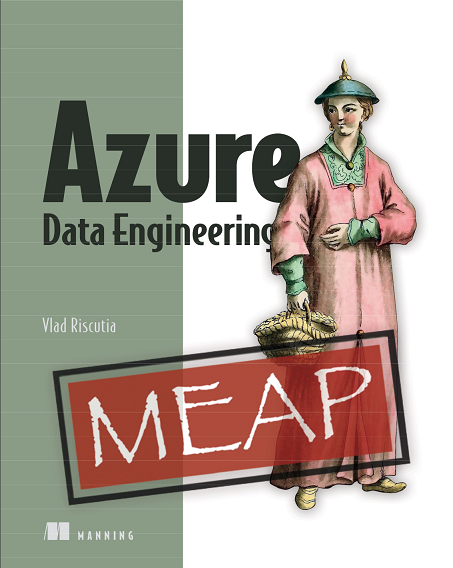
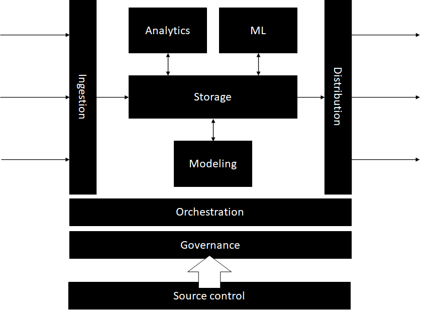

Azure Data Engineering
I am happy to announce that my new book, Azure Data Engineering, launched in Manning Early Access Preview (MEAP). While still a work in progress, the first chapters are available online. As I keep working on the book and polishing the draft, more chapters will be added, and existing chapters will be updated. That being said, the preview is now live.
For the past few years, I had the opportunity to work as the architect for Azure’s growth team. Ron Sielinski, our director of data science, describes how our team uses Azure to understand Azure in this great article on our Data Science @ Microsoft Medium publication.
Our engineering team maintains a big data platform, built fully on Azure, which supports all our team’s workloads. After we launched our Medium publication, I contributed a bunch of articles describing some of our infrastructure, challenges, and solutions. I talked about how we use Azure Data Explorer, how we enabled self-serve analytics, how we scaled out our ML platform, common challenges I noticed across the industry, and data quality.
There are plenty of resources out there covering statistics, data science, and machine learning, but comparatively little covering the engineering aspects of working with big data. This book is what I wish I had available to read when joining the team, to help navigate this complex space and lessons I had to learn the hard way.
The “engineering” in data engineering
While many data science projects start as exploratory, once they show real value, they need to be supported in an ongoing, reliable fashion. In the software engineering world, this is the equivalent of taking a research, proof of concept, or hackathon project and graduating it into a fully production-ready solution. While a hack or a prototype can cut many shortcuts and focus on “the meat of the problem” it addresses, a production-ready system does not cut any corners. This is where the engineering part of software engineering comes into play: the engineering rigor to build and run a reliable system. This includes a plethora of concerns like architecture and design, performance, security, accessibility, telemetry, debuggability, extensibility and so on.
Data engineering is the part of data science dealing with the practical applications of collecting and analyzing data. It aims to bring engineering rigor to the process of building and supporting reliable data systems.
Data engineering is surprisingly similar to software engineering and frustratingly different. While we can leverage a lot of the learnings from the software engineering world, as we will see in this book, there is a unique set of challenges we will have to address. Some of the common themes are making sure everything is tracked in source control, automatic deployments, monitoring and alerting. A key difference between data and code is that code is static: once the bugs are worked out, a piece of code is expected to consistently work reliably. On the other hand, data moves continuously into and out of a data platform and it is very likely for failures to occur due to various external reasons. Governance is another major topic which is specific to data: access control, cataloguing, privacy, and regulatory concerns are a big part of a data platform.
The main theme of the book is bringing some of the lessons learned from data engineering over the past few decades to the data space, so you can build a data platform exhibiting the properties of a solid software solution: scale, reliability, security, and so on.
Anatomy of a big data platform
A big data platform ingests data from multiple sources into a storage layer. Data is consumed from the storage layer to enable various workloads (data modeling, analytics, machine learning). Data is then distributed downstream to consumers. All the activity in a data platform needs to be orchestrated by an orchestration layer. Governance is extremely important. And, of course, DevOps is the key: deploying everything from source control.
The book is divided in 3 parts, each part looking at a big data platform through a different lens:
- Part 1 of the book will focus on infrastructure, the core services of a
data platform.
- We will start with storage, the backbone of any data platform. Chapter 2 will cover the requirements and common patterns for storing data in a data platform.
- Since our focus is on production systems, in chapter 3 we’ll discuss DevOps and what DevOps means for data.
- Data is ingested into the system from multiple sources. Data flows into and out of the platform and various workflows are executed. All of this needs an orchestration layer to keep things running. We will talk about orchestration in chapter 4.
- Part 2 will focus on the 3 main workloads that a data platform must
support:
- Modeling: this includes aggregating and reshaping the data, standardizing schema, and any other processing of the raw input data. This makes the data easier to consume by the other two main processes: analytics and machine learning. We will talk about data modeling in chapter 5.
- Analytics: this covers all analysis and reporting on the data, deriving knowledge and insights. We will look at ways to support this in production in chapter 6.
- Machine learning: these are all machine learning models training on the data. We cover running ML at scale in chapter 7.
- Part 3, governance, is a major topic with many aspects. We will cover
governance in chapters 8, 9, and 10, touching on the key topics:
- Metadata: cataloguing and inventorying the data, tracking lineage, definitions and documentation is the subject of chapter 8.
- Data quality: how to test data and asses its quality is the topic of chapter 9.
- Compliance: honoring complying requirements like the General Data Protection Regulation (GDPR), handling sensitive data, and controlling access is covered in chapter 10.
- After all the processing steps, data eventually leaves the platform to be consumed by other systems. We will cover the various patterns for distributing data in chapter 11.
The examples in the book are built on Azure, using a specific set of technologies, but the patterns should apply regardless of specific tech choices or even cloud providers. Check out the book here and follow me on LinkedIn or Twitter for updates.
Also posted on Medium.